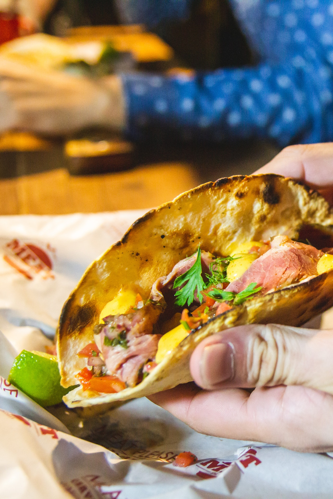
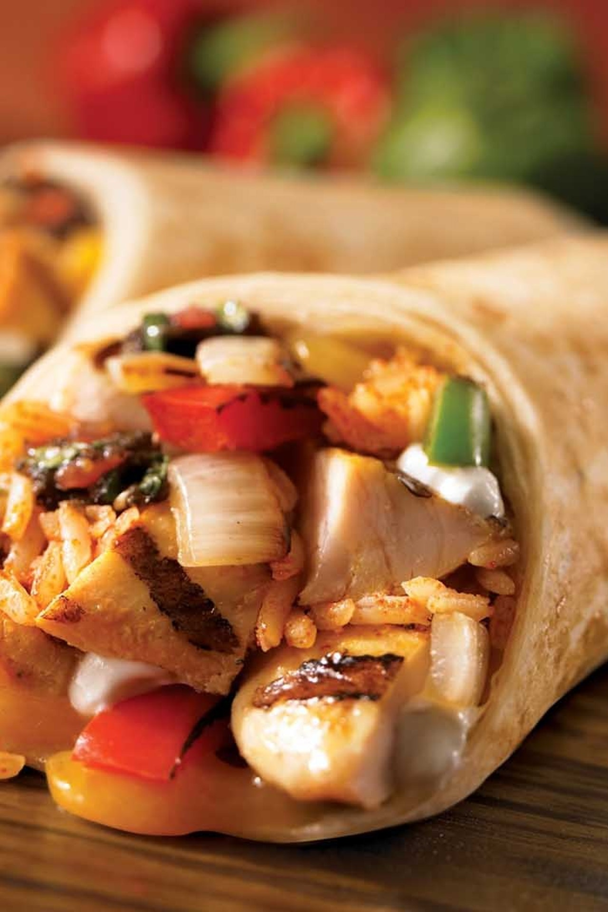

Salsa fría que se prepara con aguacate machacado, al que se agrega cebolla, tomate, chile serrano y cilantro; es típica de México y de algunos países centroamericanos.La receta original del guacamole se prepara con aguacates machacados, jugo de limón, tomate y chile. Después se le agregaron cebolla, cilantro y ajo.Sin embargo, existen diversas variantes

Tacos
Un taco es una preparación de origen mexicano que en su forma mas comun consiste en una tortilla enrollada (generalmente de maíz, también de harina de trigo, de nopal o de algún otro ingrediente) que contiene algún alimento en su interior y algún tipo de salsa. Es considerado como uno de los platillos más representativos de la comida mexicana.

Burritos
El burrito o burrito de harina es un plato de origen mexicano que consiste en una tortilla de harina de trigo enrollada en forma cilíndrica rellena de diversos ingredientes y que se suele acompañar de frijoles refritos. En contraste al taco, no lleva queso. Se hace siempre doblando una tortilla usualmente de menor tamaño que la del burrito alrededor del relleno